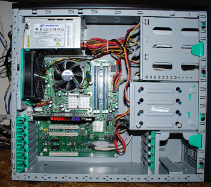
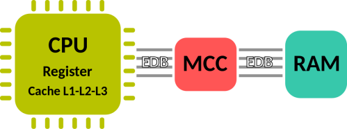
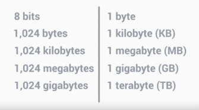
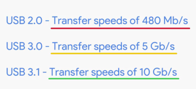

Estructura de un ordenador
• CPU (Unidad Central de Procesamiento)
• RAM (Memoria de acceso aleatorio)
• Disco Duro
• Tarjeta Gráfica
• Placa Base
• Fuente de Alimentación

El Bus de Datos Externos (External Data Bus) o EDB es la forma en que se interconectan las partes de nuestro ordenador. Cuando usted envía un voltaje uno de los cables, decimos que el estado del cable está encendido, representado por un 1. Si no hay voltaje, entonces decimos que el estado está apagado, representado por un 0. El EDB viene en diferentes tamaños, 8 bits, 16 bits, 32, incluso 64 bits.
Dentro de la CPU hay componentes conocidos como Registros. Nos permiten almacenar los datos con los que trabaja nuestra CPU.
Ya que sólo podemos enviar una línea de datos a través del EDB a la vez, necesitamos la ayuda de otro componente, el Memory Controller Chip (Chip Controlador de Memoria) o MCC. El MCC es un puente entre la CPU y la RAM. Puede estar integrado en la CPU, en el northbrige. Se encarga de buscar los datos en la RAM para facilitárselos a la CPU. Hay otro bus. Conecta la CPU con el MCC, y envía la ubicación de los datos, pero no los datos en sí.
La CPU también utiliza algo conocido como Caché.(https://es.wikipedia.org/wiki/Cach%C3%A9_de_CPU) La caché es más pequeña que la RAM, pero nos permite almacenar los datos que usamos a menudo, y nos permite una referencia más rápida. Se utiliza para almacenar datos de acceso reciente o frecuente. Hay tres niveles de caché diferentes en una CPU: L1 (el más pequeño y rápido), L2 y L3.
Pero, ¿cómo sabe nuestra CPU cuándo termina el conjunto de instrucciones y comienza una nueva? Nuestra CPU tiene un reloj interno que mantiene su funcionamiento sincronizado. Cuando se envía un voltaje al cable del reloj, se le llama ciclo de reloj. ¿Has visto alguna vez una CPU algo etiquetado como 3.4GHZ? Este número se refiere a la velocidad del reloj de la CPU. Es un número máximo de ciclos de reloj que puede manejar en un conjunto en determinado de período de tiempo. (3.40 gigahertz son 3.4 billones de ciclos por segundos. ) El Overclocking es la manera de hacer que una CPU realice más operaciones por segundo de las que tiene establecidas.

Componentes
CPU:
El libro de transición se llama conjunto de instrucciones, y, literalmente, es solo una lista de instrucciones que nuestra CPU puede ejecutar. Las instrucciones están dentro de la CPU. Así, diferentes fabricantes de CPU pueden usar diferentes conjuntos de instrucciones. Estos fabricantes de CPU usan distintos nombres de piezas para diferenciar sus procesadores. Como Intel Core i7, AMD Athlon, Snapdragon 810, Apple A8, y más.
Las CPU encajan en las placas base en distintas formas usando diferentes sockets. Actualmente, hay dos tipos principales de sockets de CPU: Land Grid Array, también conocido como LGA, y Pin Grid Array, también conocido como PGA.
En un socket LGA hay pins que sobresalen de la placa base.
El PGA los pines están ubicados en el propio procesador.
Si compras una CPU, verás que tiene una arquitectura de 32 o 64 bits.
• https://support.microsoft.com/en-us/help/15056/windows-7-32-64-bit-faq
• https://es.wikipedia.org/wiki/32_bits
• https://es.wikipedia.org/wiki/64_bits
RAM Memoria
:Casi toda la RAM es volátil, lo que significa que una vez que apagamos nuestras máquinas, los datos almacenados en la RAM se borran.
Hay muchos tipos de RAM. Y la más común en las computadoras es la DRAM o memoria dinámica de acceso aleatorio. Cuando se envía un cero o un uno a la DRAM, esta genera cada bit en un condensador microscópico. Esta es la carga o la descarga representada por un uno o un cero. Estos semiconductores se colocan en chips que se encuentran en la RAM y almacenan nuestros datos.
También hay diferentes tipos de estados de memoria en los que se pueden poner chips DRAM. Las más modernas tarjetas DIMM, que, por lo general, se entiende como módulo de memoria dual integrada, tienen diferentes tamaños de pines en ellas.
Después de la creación de la DRAM, los fabricantes de RAM desarrollaron algo llamado SDRAM, que significa DRAM sincrónica.
Este tipo de RAM está sincronizada con la velocidad de reloj de nuestro sistema, lo que permite procesar más rápido los datos.
En los sistemas actuales, usamos otro tipo de RAM, llamada SDRAM de doble velocidad de datos o DDR SDRAM para abreviar. La mayoría de las personas se refieren a esta RAM como DDR, más breve aún. Hubo muchas iteraciones de DDR, a partir de DDR1, DDR2, DDR3 y ahora, DDR4. DDR es más rápida, consume menos energía, y tiene más capacidad que las versiones anteriores de SDRAM.
Y una RAM más rápida significa que los programas se pueden ejecutar más rápido y que pueden ejecutarse más programas al mismo tiempo.
https://es.wikipedia.org/wiki/Memoria_de_acceso_aleatorio#Tipos_de_RAM
Placa Base:
Nos permite ampliar la funcionalidad de nuestra computadora por medio de tarjetas de expansión. Encamina la energía desde la fuente de alimentación y permite que las diferentes piezas de la computadora se comuniquen entre sí.
En primer lugar, está el chipset, que decide cómo los componentes se comunican entre sí en nuestra máquina. El chipset en la placa base está formado por dos chips. Uno es el puente norte (northbridge), que interconecta cosas como la RAM y las tarjetas de video. El otro chip es el puente sur (southbridge), que mantiene nuestros controladores E/S o de entrada/salida, como los discos duros y los dispositivos USB que ingresan y extraen datos. En algunas CPU modernas, el puente norte se integró directamente en la CPU, por lo tanto, no hay un chipset de puente norte separado.
Nos permite administrar datos entre nuestra CPU, la RAM y los periféricos.
Las ranuras de expansión también nos brindan capacidad para aumentar la funcionalidad de nuestra computadora.
El estándar para bus de expansión en la actualidad es el PCI Express o interconector de componentes periféricos express.
El factor de forma se reifere a los diferentes tamaños de placas base disponibles hoy en día. El factor de forma más común para placas base es ATX, que significa tecnología avanzada extendida. Si no quieres usar un factor de forma ATX, puedes usar un ITX, factor de forma de tecnología informática extendido.
Almacenamiento:

https://es.wikipedia.org/wiki/Kilobyte
En la actualidad hay dos tipos de disco duro HDD o Disco Duro, que usan un disco que gira y un brazo mecánico que lee y escribe la información. La velocidad de giro del disco y que permite leer y escribir datos se denomina RPM o Revoluciones Por Minuto A mas RPM del disco, mas rápida la lectura. Los HDDs son propensos a daños pues tienen muchas partes móviles.
El nuevo tipo de almacenamiento SSD o Unidad de Estado Solido Los SSD no tienen partes móviles. La información se guarda en microchips.
Existen también Unidades Híbridas SSD y HDD.
Las Unidades de Disco Duro usan varias interfaces La interfaz mas común se denomina ATA (IDE). La mas popular unidad ATA es serial ATA, o SATA. Las unidades SATA pueden cambiarse "en caliente".
Para las nuevas velocidades SSD se creo una nueva interface llamada NVM Express, abreviado NVMe. En lugar de usar cable para conectar la Unidad a la maquina la Unidad se acopla como una ranura de expansion, lo que permite una mayor velocidad de transferencia de datos e incrementos en la eficiencia
Fuentes de Alimentación:
Nuestras computadoras usan voltaje CC, entonces tenemos que tener una forma de convertir el voltaje CA de nuestra compañía de energía eléctrica en algo que podamos usar.
Como regla general, asegúrate de usar el voltaje adecuado para tus componentes electrónicos.
A la cantidad de electricidad que sale la llamamos corriente o amperaje, se mide en amperios. Podemos pensar que los amperios extraen electricidad, a diferencia del voltaje, que empuja la electricidad. Los amperios extraerán la electricidad necesaria, pero el voltaje te dará toda la electricidad. El voltaje es la capacidad física que tiene un circuito eléctrico.
El vataje es la cantidad de voltios y amperios que necesita un dispositivo (cantidad de potencia expresada en vatios). Las fuentes de alimentación solo te dan la cantidad que tu sistema necesita.
Periféricos:

Los dispositivos USB, también conocidos como Universal Serial Bus es un bus de comunicaciones que sigue un estándar que define los cables, conectores y protocolos usados en un bus para conectar, comunicar y proveer de alimentación eléctrica entre computadoras, periféricos y dispositivos electrónicos. En los sistemas actuales son los USB 2.0, 3.0, y 3.1. El más reciente es el conector tipo C. USB tipo C también puede hacer transferencia de datos y alimentación.
https://es.wikipedia.org/wiki/Universal_Serial_Bus
MB es megabyte o unidad de almacenamiento de datos, mientras que M mayúscula b minúscula barra s (Mb/s) es un megabit por segundo, que es una unidad de velocidad de transferencia de datos. Un byte son 8 bits, por lo que para transferir un archivo de un megabyte en un segundo necesitas una velocidad de conexión de 8 Mb/s. Entonces, para transferir 40 MB de datos en un segundo, necesitas una velocidad de transferencia de 320 Mb/s.
• USB 2.0 tiene un ancho de banda de 480 Megabits/s (480 Megabits divido por 8bits) que son 60 MB/s, luego 1GB / 60MB/s -> 1024Mb / 60MB/s = 17seg
• USB 3.0 tiene un ancho de banda de 5 Gigabits/s (5120 Megabits divido por 8bits) que son 640 MB/s, luego 1Gb / 640MB/s -> 1024Mb / 640MB/s = 1,6seg
• USB 3.1 10Gb/s → 10240Mb/s / 8bits → 1280MB/s, luego 1GB / 1280MB/s → 1024MB / 1280MB/s = 0.8 seg
Los puertos USB 2.0 son negros, los 3.0 son azules y los 3.1 son verdes azulados.
Perifericos de visualización son los cables DVI, Los cables DVI, por lo general, solo emiten video. HDMI se convirtió en el estándar de muchos televisores y computadoras hoy en día, y emite audio y video. DisplayPort, que también emite audio y video.
Arranque de la computadora
:Resulta que nuestros dispositivos usan programas para indicarle a la CPU cómo ejecutarlos. Estos programas se llaman servicios o controladores. Los controladores contienen las instrucciones que nuestra CPU necesita para entender a los dispositivos externos como teclados, cámaras web, impresoras.
BIOS, o servicios básicos de entrada/salida (Basic Input Output Services). El BIOS es un software que ayuda a inicializar el hardware de nuestra computadora y pone a funcionar nuestro sistema operativo.
Nuestra placa base almacena el BIOS en un tipo especial de memoria, el chip de memoria de solo lectura, o chip ROM.
En el sistema actual, hay otra opción en lugar del BIOS, llamada UEFI, que significa interfaz de firmware extensible unificada, tiene mejor compatibilidad y soporte para el hardware más nuevo.
Cuando enciendes una computadora, puedes notar un pitido de vez en cuando. Las computadoras ejecutan una prueba para asegurarse de que todo el hardware funcione correctamente. Esto se denomina autoprueba de encendido (Power On Self Test) o POST. El BIOS la ejecuta cuando inicias tu computadora. POST detecta qué hardware hay en la computadora. Esto sucede antes de que el BIOS inicialice el hardware o cargue controladores esenciales. La computadora generalmente puede emitir una serie de pitidos, casi como el código Morse, lo que ayudará a identificar el problema. Cada fabricante tiene diferentes códigos de sonido. Si tu computadora se inicia sin fallas, escucharás un solo pitido.
El CMOS Chip almacena datos básicos sobre el inicio de tu computadora, como la fecha y hora y el modo de inicio seleccionado. Puedes cambiar estas configuraciones durante el inicio en el menú de configuración de CMOS o BIOS.
Una tarea de TI que se realiza frecuentemente es el restablecimiento de la imagen inicial de una computadora. Este procedimiento se realiza, por lo general, a través de un programa que está almacenado en algún dispositivo externo, como una memoria USB, o un CD ROM o incluso un servidor accesible a través de la red. Para acceder a estos programas y restablecer la imagen, tendrás que usar el BIOS para decirle a la computadora que inicie desde ese dispositivo externo.